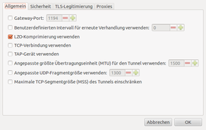

VPN Plugins
Dieser Artikel wurde für die folgenden Ubuntu-Versionen getestet:
Ubuntu 16.04 Xenial Xerus
Zum Verständnis dieses Artikels sind folgende Seiten hilfreich:
Dieser Artikel erläutert, wie man sich mittels einer Erweiterung für den NetworkManager mit einem Virtuellen Privaten Netzwerk verbindet. Andere Möglichkeiten und Hinweise zur Nutzung finden sich unter OpenVPN,VPNC. Nutzer des KDE-Desktops können kvpnc nutzen.
Installation¶
Ubuntu Paketquellen¶
Folgende Pakete sind je nach Bedarf zu installieren [1]:
network-manager-openvpn (universe, für OpenVPN-Zugang)
network-manager-openvpn-gnome (universe)
network-manager-pptp (für Windows-VPN-Zugang)
network-manager-pptp-gnome (für Windows-VPN-Zugang)
network-manager-vpnc (universe, für Cisco-VPN-Zugang)
network-manager-vpnc-gnome (universe, für Cisco-VPN-Zugang)
network-manager-openconnect (universe, für Cisco-AnyConnect-VPN-Zugang)
network-manager-openconnect-gnome (universe)
 mit apturl
mit apturl
Paketliste zum Kopieren:
sudo apt-get install network-manager-openvpn network-manager-openvpn-gnome network-manager-pptp network-manager-pptp-gnome network-manager-vpnc network-manager-vpnc-gnome network-manager-openconnect network-manager-openconnect-gnome
sudo aptitude install network-manager-openvpn network-manager-openvpn-gnome network-manager-pptp network-manager-pptp-gnome network-manager-vpnc network-manager-vpnc-gnome network-manager-openconnect network-manager-openconnect-gnome
Nach der Installation muss der NetworkManager neu gestartet werden[2]:
sudo service network-manager restart
Einrichtung¶
Als erstes muss eine VPN-Verbindung angelegt werden. Dazu klickt  man auf das Symbol des NetworkManagers und wählt den Punkt "VPN Verbindung -> VPN konfigurieren".
man auf das Symbol des NetworkManagers und wählt den Punkt "VPN Verbindung -> VPN konfigurieren".
Es erscheint nun der Konfigurationsdialog. Der Namen der VPN-Verbindung kann frei gewählt werden, die anderen Daten sind gemäß Konfiguration des VPN-Servers einzutragen. Die benötigten Zertifikate sollte man auch vom Betreiber des VPN-Servers erhalten.
Ein Klick auf "Erweitert" ruft die erweiterten Konfigurationsmöglichkeiten auf. Auch hier sind die Werte in den Reitern "Allgemein", "Sicherheit", "TLS Legitimierung" und "Proxies" gemäß Konfiguration des Servers einzusetzen.

Verbindung nutzen¶
Liegt eine fertig konfigurierte Verbindung vor, so kann diese aktiviert werden. Dabei muss aber bereits eine Internetverbindung bestehen! Um VPN zu aktivieren klickt man mit der linken Maustaste auf das Symbol des NetworkManagers und wählt unter "VPN Verbindungen" seine eingerichtete VPN-Verbindung.
Ist dies aktiv, so ist dies an dem kleinen Schloss erkennbar, welches rechts unten am Symbol des NetworkManagers angezeigt wird.
Zum Beenden einer VPN-Verbindung klickt man wieder auf das Symbol des NetworkManagers und wählt dann "VPN Verbindungen -> VPN trennen".
Zum Löschen einer Verbindung wählt man "VPN Verbindungen -> VPN konfigurieren", markiert die zu löschende Verbindung und klickt dann auf "Löschen..."
Problembehebung¶
Gruppenpasswort¶
Sollte das Gruppenpasswort bei einer Konfigurationsdatei für das Cisco-VPN-Protokoll in der PCF-Datei verschlüsselt abgespeichert sein (eine sehr lange hexadezimale Zahl), so kann man sie ggf. manuell entschlüsseln (siehe cisco-decode  ) und in Klartext übertragen.
) und in Klartext übertragen.
Dies ist nicht mehr notwendig. Das Gruppen-Passwort wird beim Importieren der PCF-Datei automatisch entschlüsselt.
Die VPN-Konfiguration ist im Network-Manager nicht verfügbar¶
In den Netzwerkeinstellungen müssen alle über den Network-Manager zu verwaltenden Geräte über DHCP konfiguriert werden, sonst erscheint auch keine Konfigurationsmöglichkeit der VPN-Verbindungen im Network-Manager-Terminal.
Verbindung kann nicht aufgebaut werden¶
Oft ist es wichtig, dass bei der Internetverbindung, die verwendet wird, DHCP aktiviert wird, also keine statischen internen IPs vergeben werden. Zu DHCP siehe hier: (Netzwerk)
MTU-Wert anpassen, bei Verbindungsproblemen¶
Einige Unis oder Hochschulen setzen voraus, dass man einen bestimmten MTU-Wert für den Tunnel besitzt, sonst bekommt man nach dem erfolgreichen Verbindungsaufbau keine Verbindung ins Netz. Das VPNC-Plugin hat jedoch einen MTU von 1412 fest einkodiert, der Cisco-VPN benutzt aber standardmäßig einen MTU von 1356, um fehlerfrei zu funktionieren.
MTU nach Verbindungsaufbau setzen¶
Man kann den MTU-Wert des Tunnels mit folgendem Befehl per Hand setzen:
sudo ifconfig tun0 mtu 1356
Dafür ist eine erfolgreiche Verbindung über VPN notwendig, da erst nach dem Verbinden das "tun0"-Device vorhanden ist. Dieser Schritt ist bei jedem Verbindungsaufbau notwendig, lässt sich aber automatisieren, indem man ein Dispatcher-Script im Verzeichnis /etc/NetworkManager/dispatcher.d/ anlegt. Das folgende Beispiel 10vpnc-up setzt den MTU-Wert auf 1356, wenn eine VPN-Verbindung hergestellt wurde:
1 2 3 4 5 6 7 8 | #!/bin/sh INTERFACE=$1 ACTION=$2 if [ "$ACTION" = "vpn-up" ]; then sleep 3 ifconfig "$INTERFACE" mtu 1356 fi |
MTU-Wert im Quelltext anpassen und Paket neukompilieren¶
Alternativ kann man die Quellen über die Ubuntu-Paketquellen laden und den MTU-Wert im Quelltext ändern. Dieses ist mit einem kleinen Eingriff schnell gemacht.
Man legt sich am besten ein Verzeichnis an, in das man die Quellen herunterlädt. Es wird vorausgesetzt, dass man in der sources.list die Quelldateien aktiviert hat. Dazu muss man, je nach Ubuntu-Version, unterschiedliche Zeilen einfügen:
Quellen herunterladen und weiteres Vorgehen¶
Jetzt lädt man die Quellen in das zuvor angelegte Verzeichnis. Falls man die Quellen gerade eingefügt hat, sollte man die Quelltexte aktualisieren. Darauf wechselt man in das Verzeichnis network-manager-vpnc-<VERSION>, wobei <VERSION> die VPNC Version aus der Quelle ist, und daraufhin in das Unterverzeichnis src.
cd network-manager-vpnc-<VERSION>/src
Dort editiert man die Datei nm-vpnc-service-vpnc-helper.c, sucht nach der Zeile val = uint_to_gvalue (1412); und passt den Wert an die jeweilige Uni oder Hochschule an, z.B. 1356. Nach der Änderung sollte das Ganze wie folgt aussehen:
/* Set MTU to 1356 */
val = uint_to_gvalue (1356);Nun wird das Verzeichnis verlassen und wie im Folgenden beschrieben aus der Quelle ein installierbares Paket erstellt. Dazu müssen vorher noch die richtigen Abhängigkeiten für den Paketbau erfüllt werden.
Befehl zum Installieren der Build-Abhängigkeiten:
sudo apt-get build-dep network-manager-vpnc
sudo aptitude build-depends network-manager-vpnc
cd .. dpkg-buildpackage
Nachdem der Kompiliervorgang abgeschlossen wurde, findet man im Unterverzeichnis das zugehörige Paket. Dieses wird installiert, dabei wird ein vorhandene network-manager-vpnc- Installation ersetzt. Optional kann man jetzt noch die Pakete wieder entfernen, die für die Abhängigkeit installiert wurden.
sudo dpkg -i ../*.deb sudo apt-get autoremove
Das Paket kann man jetzt sichern und für eine spätere Installation wiederverwenden.
VPN-Verbindung fehlgeschlagen (VPN-Geheimnisse)¶
Wenn eine Fehlermeldung in der Art Die Verbindung XY konnte nicht hergestellt werden, da keine gültigen VPN-Geheimnisse vorliegen, kann ein Neustart des NetworkManagers mit einem der folgenden Befehle helfen:
sudo service network-manager restart
- Erstellt mit Inyoka
-
 2004 – 2017 ubuntuusers.de • Einige Rechte vorbehalten
2004 – 2017 ubuntuusers.de • Einige Rechte vorbehalten
Lizenz • Kontakt • Datenschutz • Impressum • Serverstatus -
Serverhousing gespendet von